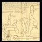

| The Library of Congress >> Researchers | |
| Home | |
|
Notice: All Library of Congress research centers are closed to the public (including researchers and others with reader identification cards) until further notice to reduce the risk of transmitting COVID-19 coronavirus. All Library-sponsored public programs are also postponed or cancelled until further notice. Online resources and reference services, such as Ask a Librarian, will continue to be available during this time. For more information, see: www.loc.gov/coronavirus. | ||
|
GENERAL INFORMATION
LC Online Catalog Electronic Resources
Thomas Jefferson Bldg (LJ240) |
|
RESOURCES Handbook
of Latin American Studies Finding Aids Hispanic and Portuguese Publications about the |

| Home | ||||
| ||||